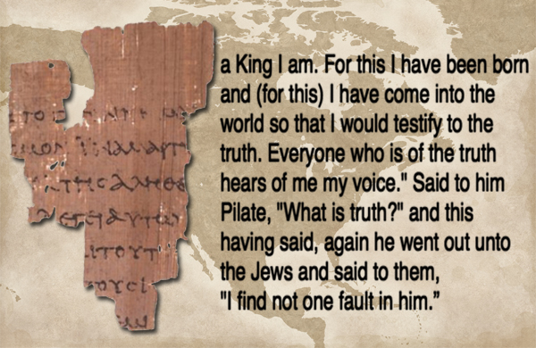
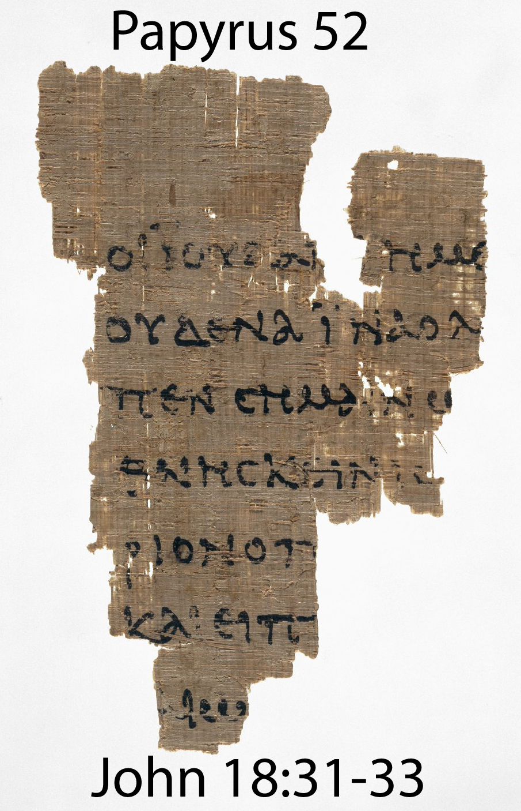
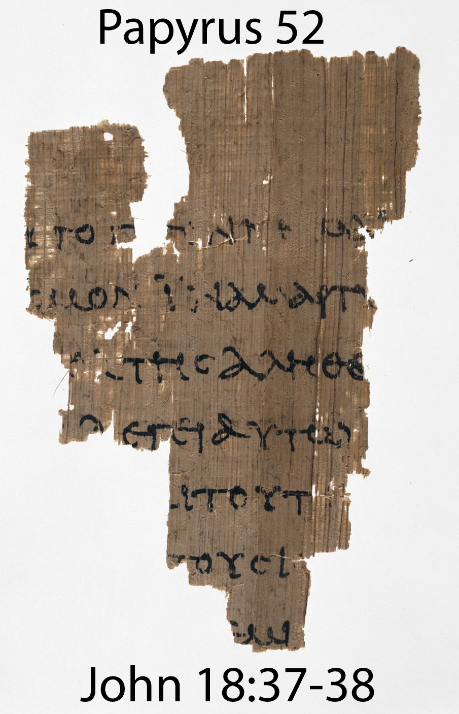
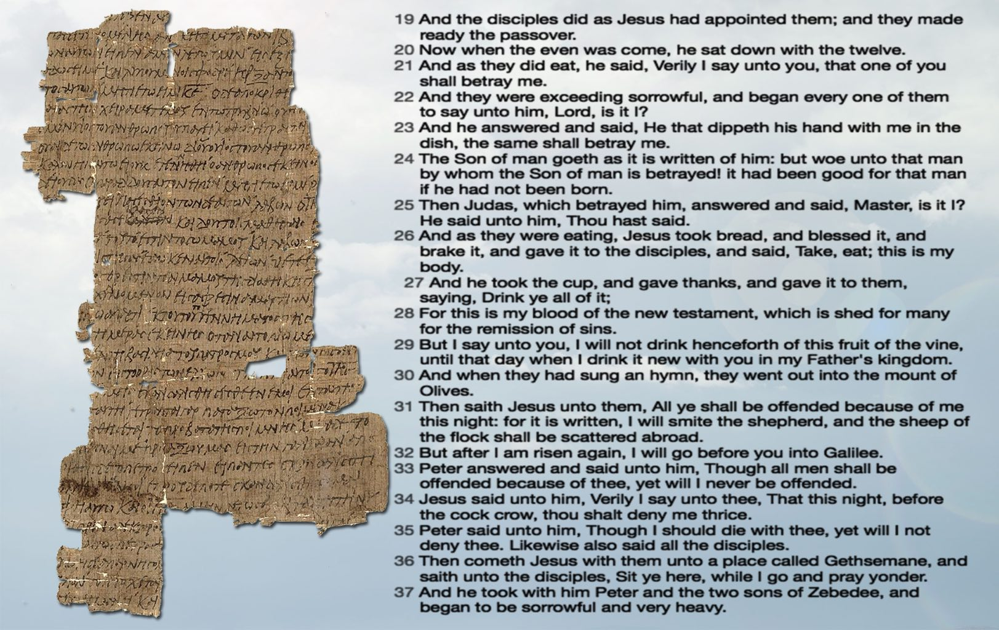
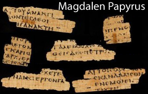

A New Testament papyrus is a copy of a portion of the New Testament made on papyrus. To date, over 130 such papyri are known. In general, they are considered the earliest witnesses to the original text of the New Testament. This elite status among New Testament manuscripts only began in the 20th century. The grouping was first introduced by Caspar René Gregory, who assigned papyri texts the Blackletter character 𝔓 followed by a superscript number. This number refers not to the age of the papyrus, but to the order in which it was registered. Before 1900, only 9 papyri manuscripts were known, and only one had been cited in a critical apparatus (𝔓11 by Constantin von Tischendorf). These 9 papyri were just single fragments, except for 𝔓15, which consisted of a single whole leaf. The discoveries of the twentieth century brought about the earliest known New Testament manuscript fragments. Kenyon in 1912 knew 14 papyri, Aland in his first edition of Kurzgefasste... in 1963 enumerated 76 papyri, in 1989 were known 96 papyri, and in 2008 124 papyri. As of 2019, a total of 140 papyri are known.
The earliest and most famous Greek New Testament manuscript is the Ryland Papyrus 𝔓52, currently on display at the John Rylands University Library in Manchester, UK. It was purchased in 1920 by Bernard Grenfell on the Egyptian antiquities market. However, it wasn’t really “discovered” until 1934 when it was translated by C. H. Roberts. Three of the leading papyrologists in Europe to whom Roberts sent photos of the fragment to dated it from A.D. 100-150, although most scholars today would use a wider date range of the second century in general. 𝔓52 comes from a codex (ie. book form, not a scroll) and contains parts of seven lines from the John 18:31–33 on the front, and parts of seven lines from verses 37–38 on the back.
 Papyrus 37 designated by 𝔓37 (in the Gregory-Aland numbering) is an early copy of the New Testament in Greek. It is a papyrus manuscript of the Gospel of Matthew dating to the 3rd century, sometime around 250-260 CE, due to its affinities with 𝔓53 (dated to 260 CE), The correspondence of Heroninos (dated shortly before or after 260 CE) and a letter by Kopres (P. Greco-Egizi 208, dated 256 CE). It is currently housed at the University of Michigan, Ann Arbor Library (inventory #1570), and was purchased in Cairo, Egypt, in 1924. Its exact origin is unknown, but it most likely came from Egypt. The manuscript is a fragment of a single leaf consisting of one column of 33 lines (40 to 50 characters per line), roughly 12.1 cm by 22.4 cm. The fragment is damaged on all sides with considerable lacunae and was probably originally 15 cm by 25.5 cm. The surviving text of Matthew are verses 26:19-52. This portion of Matthew depicts the Last Supper, the betrayal by Judas, and the beginning of the Arrest of Jesus.
The papyrus uses a legible, cursive-like script with irregular character linking. The cursive letters resemble the cursive that was common between the years 200 and 350. There are many variations in the letters, which makes a precise dating based on paleography difficult. The writer was most likely literate and educated because the letters do not appear crude or imitative, but the irregularities suggest the writer was not an experienced scribe. The handwriting is similar to personal letters and documents from the mid 3rd century.
Certain nomina sacra (ΚΕ ΙΗΣ ΠΝΑ ΙΗΣΥ) are employed in the text. There are no punctuation or accent marks. There are, however, dots that appear in irregular intervals, placed in the text by a later hand, apparently to help reading. This suggests that the manuscript was used at one point in church. Because the manuscript is so short, it is difficult to gauge the regularity of the dots, or their purpose for certain.
The text-type mostly follows Western readings. By Sander's count, there are 85 extant variants in this portion of Matthew. 18 of those readings are supported by nearly all manuscripts. 11 are unique to the manuscript. The remaining 56 fall within Western, Alexandrian, and Caesarean text-types. The text has to be reconstructed in places of lacuna by comparing the amount of space missing to the number of letters in various readings. Based on the reading variations, the text most likely originated in Egypt.
The "Magdalen" papyrus was purchased in Luxor, Egypt in 1901 by Reverend Charles Bousfield Huleatt (1863–1908), who identified the Greek fragments as portions of the Gospel of Matthew (Chapter 26:23 and 31) and presented them to Magdalen College, Oxford, where they are cataloged as P. Magdalen Greek 17 (Gregory-Aland 𝔓64) and whence they have their name. When the fragments were finally published by Colin H. Roberts in 1953, illustrated with a photograph, the hand was characterized as "an early predecessor of the so-called 'Biblical Uncial'" which began to emerge towards the end of the 2nd century. The uncial style is epitomised by the later biblical Codex Vaticanus and Codex Sinaiticus. Comparative paleographical analysis has remained the methodological key for dating the manuscript, but there is no consensus on the dating of the papyrus. Estimates have ranged from the first century to the fourth century AD. The fragments are written on both sides, indicating they came from a codex rather than a scroll. More fragments, published in 1956 by Ramon Roca-Puig, cataloged as P. Barc. Inv. 1 (Gregory-Aland 𝔓67), were determined by Roca-Puig and Roberts to come from the same codex as the Magdalen fragments, a view which has remained the scholarly consensus.

Here is a quick video that talks about the New Testament Papyri:
John 3:16 For God so loved the world that he gave his one and only Son, that whoever believes in him shall not perish but have eternal life.